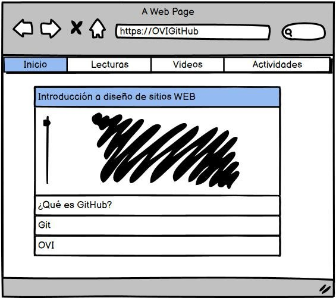
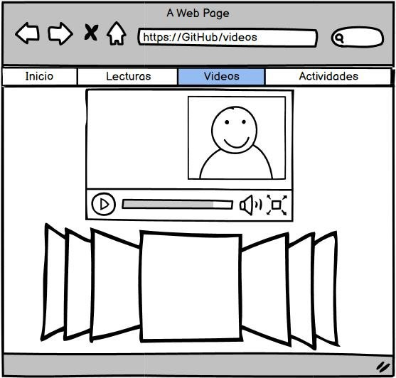
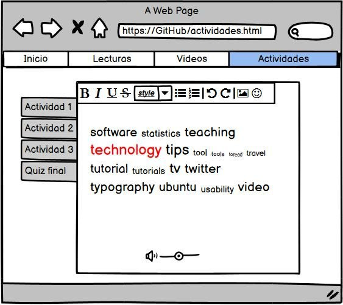
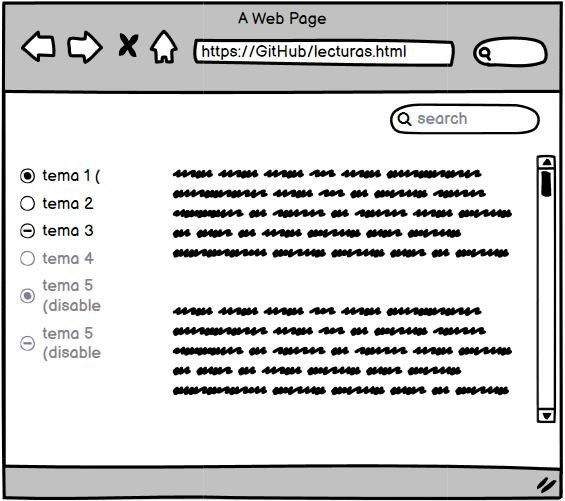

GIT y GitHub |
||
ObjetivosObjetivo general:Desarrollar una pagina html que enseñe los pormenores de GutHub y Git Objetivos específicoDesarrollar las tematicas a explicar Implementar los conocimientos sobre las plataformas de repositorios Git y GitHub Enseñar de manera didactica el buen uso de estas plataformas |
MaterialesPara la interfaz de desarrollo de esta OVI en cuestión se tienen los siguiewntes elementos: herramienta fundamental para la programación de la planeación de la interfaz futura, es un software libre con una interfáz amigable que resalta las etiquetas y ayuda con la predicción de comandos Esta versión decargable de GitHub ayudará a tomar varias referencias para enrriquecer la página y en dado caso de manejar varias versiones del planteamineto de la OVI ayudrá a mostrar estos cambios rapidamente Es la herramienta fundamental para plantear una distribución de la interfáz gráfica, sus formas y cambios gráficos que tendrá con cada interacción del usuario |
|
CONTENIDO |
||
¿Qué es GitHub y para que se utiliza?GitHub es un sistema de gestión de proyectos y control de versiones de código, así como una plataforma de red social diseñada para desarrolladores. Pero, ¿cuál es el propósito de GitHub? Bueno, en general, te permite colaborar con otras personas de todo el mundo, planificar proyectos y realizar un seguimiento del trabajo. GitHub es también uno de los repositorios en línea de trabajo colaborativo más grandes del mundo. |
¿Qué es Git?Antes de continuar, debemos entender a Git como el núcleo de GitHub. Git es un sistema de control de versiones desarrollado por Linus Torvalds (el creador de Linux). Cuando los desarrolladores crean nuevos proyectos, siempre modifican el código de forma continua. Incluso después de que comience el proyecto, aún necesitan actualizar la versión, corregir errores, agregar nuevas funciones, etc. El sistema de control de versiones ayuda a registrar los cambios realizados en el código. Además, registra quién realizó los cambios y puede restaurar el código eliminado o modificado. Aparte de ser software libre, no depende de un repositorio central, desde varios dispositivos con permisos se pueden ir alterando y mejorando lo realizado. |
|
APARIENCIA |
||
|
Apariencia de INICIO  |
Apariencia en LECTURAS  |
|
|
Apariencia en videos  |
Apariencia en actividades  |
|